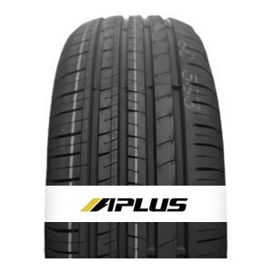

Aplus A609 155/70R12

RM 88.00
APLUS A609 – 155/70R12 (73T). A comfortable and economical passenger car tyre designed for everyday driving. Its optimized tread pattern helps reduce road noise for a quieter and smoother ride. Wide longitudinal and transverse grooves improve water drainage and wet-road grip, while the asymmetric shoulder design enhances handling stability. The optimized tread structure promotes even wear and longer tyre life, making it a practical choice for daily commuting.
Klang Hock Li Tyre Services Sdn Bhd, Klang, Selangor, Malaysia.
View live product details and enquire